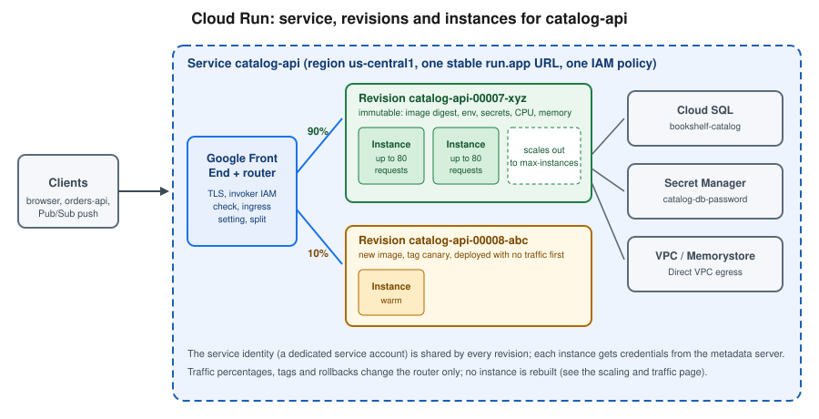

Cloud Run
|
This content was generated with the assistance of AI and should be verified against the official documentation before being relied on in production. |
Commands and limits below are current for the gcloud CLI 586.x line (gcloud run command group), the Cloud Run
quotas and release notes published through 2026-09-29, the Google Cloud Client Libraries for Java
(libraries-bom), Spring Cloud GCP 8.x for Spring Boot 4 (7.4.x for Spring Boot 3) and Terraform
hashicorp/google v8 (checked 2026-09-30); re-verify against gcloud version and the linked reference pages before
relying on them in a pipeline.
Cloud Run runs stateless containers on Google’s infrastructure, starts instances when requests arrive, scales them
with the traffic (down to zero if you allow it) and bills for the resources used rather than for idle servers. It is
the service Google recommends for new users who want to run a container, a web application or an API without
operating a cluster. In the Bookshelf scenario (see Google Cloud) Cloud Run hosts the
catalog-api Spring Boot service and the orders-api service. This page is the "simple deployment" guide: what a
service and a revision are, how to deploy one from an image, from source or from a YAML file, how to configure,
secure, connect and expose it, what it costs and how to troubleshoot it. Autoscaling, traffic splitting, rollbacks,
jobs, worker pools and GPUs are in Cloud Run Scaling, Traffic and Jobs; functions and
event triggers are in Cloud Run Functions and Events; the comparison with Compute
Engine, GKE and App Engine is in Choosing a Compute Service.
Concepts
- Service
-
The long-running, request-driven resource. A service has a region, a stable
run.appURL, an IAM policy (who may invoke it), an ingress setting and a configuration template. Services are regional; a multi-region service (GA 2026-06-29) is covered on the scaling page. - Revision
-
An immutable snapshot of a service’s configuration: container image digest, CPU and memory, environment variables, secret references, volumes, VPC settings, timeout and concurrency. Every deploy or configuration change creates a new revision; the service routes traffic to one or more revisions by percentage or by tag. Revisions are named
SERVICE-00007-abcby default. - Instance
-
A running copy of a revision (one or more containers sharing a network namespace). Cloud Run adds and removes instances automatically; each instance handles several requests at once up to the configured concurrency.
- Container contract
-
The container must listen for HTTP (or HTTP/2, gRPC) requests on the port in the
PORTenvironment variable (default 8080) on0.0.0.0, be built for 64-bit Linux, be stateless (the local filesystem is in-memory and disappears with the instance) and handleSIGTERMby finishing in-flight requests, because an instance is stopped about ten seconds after it receives the signal. Outbound-only background work is only reliable with instance-based billing (below). - Execution environment
-
Cloud Run offers a first-generation sandbox (fast cold starts, a restricted Linux compatibility layer) and a second-generation environment (full Linux compatibility, network file systems, faster CPU and network at the price of slightly slower starts). New services use the default chosen by Cloud Run; select one explicitly with
--execution-environment gen1|gen2when a library needs full Linux system-call support. - Knative lineage
-
Cloud Run’s API (
serving.knative.dev/v1) is a subset of Knative Serving, which is why service YAML looks like Kubernetes objects. Older guides still describe "Cloud Run for Anthos"; that product is now Knative serving on GKE and is not covered here. Use the fully managed Cloud Run described on this page.

Ways to deploy
- From an image
-
The production path. CI builds the image, pushes it to an Artifact Registry Docker repository (
us-central1-docker.pkg.dev/$PROJECT_ID/bookshelf/catalog-api) and the pipeline deploys by digest. Container Registry (gcr.io) was shut down on 2025-03-18; older guides that push togcr.io/PROJECT/IMAGEshould use Artifact Registry instead (see Container Registry and Builds). Cloud Run can also deploy public images and, since 2026-07-14, import public images from GitHub Container Registry (GA). - From source
-
gcloud run deploy --source .uploads the folder, builds an image with Cloud Build (aDockerfileif present, otherwise Google Cloud buildpacks for Go, Node.js, Python, Java, .NET, Ruby and PHP), stores it in an Artifact Registry repository that Cloud Run creates automatically in the region, namedcloud-run-source-deploy, and deploys it. It is the fastest way to a working URL and a good fit for prototypes; a pipeline with explicit build, scan and promote stages is better for production. A Preview option (--no-build) deploys pre-packaged artifacts without a build step. - Declaratively
-
A Knative-style
service.yamlapplied withgcloud run services replace, which is repeatable and reviewable. Terraform (below) is the infrastructure-as-code alternative; see Infrastructure as Code for how it fits with the rest of the project.
Prerequisites for Bookshelf
The commands in this page use these shell variables and a dedicated service account for the catalog-api service.
The account runs the service; it is not the account that deploys it.
gcloud services enable run.googleapis.com artifactregistry.googleapis.com \
cloudbuild.googleapis.com secretmanager.googleapis.com \
sqladmin.googleapis.com compute.googleapis.com
PROJECT_ID=$(gcloud config get-value project)
PROJECT_NUMBER=$(gcloud projects describe "$PROJECT_ID" --format='value(projectNumber)')
REGION=us-central1
SERVICE=catalog-api
REPO=bookshelf
IMAGE="$REGION-docker.pkg.dev/$PROJECT_ID/$REPO/$SERVICE:1.0.0"
RUNTIME_SA="$SERVICE@$PROJECT_ID.iam.gserviceaccount.com"
gcloud config set run/region "$REGION"
gcloud iam service-accounts create "$SERVICE" \
--display-name="Bookshelf catalog-api runtime"Derived from Set up Cloud Run, Configure the service identity and gcloud iam service-accounts create.
If a service does not name a service account, Cloud Run runs it as the Compute Engine default service account of the
project, which historically holds the broad Editor role. Google recommends a dedicated user-managed service account
per service, with only the roles the code needs, and recommends enforcing the
iam.automaticIamGrantsForDefaultServiceAccounts organization policy constraint so new projects do not grant the default
account that role automatically. Never set GOOGLE_APPLICATION_CREDENTIALS on Cloud Run and never download a
key: the platform supplies credentials for the attached account through the metadata server (Application Default
Credentials; see Identity and Access).
The person or pipeline that deploys needs permission to call the Cloud Run Admin API (for example
roles/run.developer), roles/iam.serviceAccountUser on the runtime service account, and, for source deploys,
roles/run.sourceDeveloper and roles/serviceusage.serviceUsageConsumer; the Cloud Build service account needs
roles/run.builder.
Deploy a service
In the Google Cloud console
-
Select the project in the project picker, then open Cloud Run. If prompted, enable the Cloud Run Admin API.
-
Click Deploy container and choose Service. (Cloud Shell, the terminal icon at the top right, is available for any CLI step below.)
-
Choose Deploy one revision from an existing container image and select the image from Artifact Registry, or Continuously deploy from a repository / Deploy from source to build from GitHub or a local upload.
-
Enter the service name
catalog-apiand choose the regionus-central1. -
Under Authentication, choose Require authentication (recommended) or Allow public access.
-
Under Billing, choose Request-based or Instance-based; under Service scaling set the minimum and maximum number of instances.
-
Under Ingress control, choose Internal, Internal and Cloud Load Balancing or All.
-
Expand Containers, Volumes, Networking, Security. On Container(s) set the port, CPU, memory, concurrency, request timeout and execution environment; on Variables & Secrets add environment variables and secret references; on Volumes add Cloud Storage, NFS or in-memory volumes; on Networking configure Direct VPC egress; on Security choose the service account.
-
Click Create. The page shows the service URL when the first revision is ready.
With the gcloud CLI
From an image:
gcloud run deploy "$SERVICE" \
--image="$IMAGE" \
--region="$REGION" \
--service-account="$RUNTIME_SA" \
--no-allow-unauthenticated \
--port=8080 \
--cpu=1 --memory=1Gi \
--concurrency=80 --timeout=300 \
--min-instances=0 --max-instances=10 \
--cpu-boostFrom source (Cloud Build creates the image and the cloud-run-source-deploy repository):
cd catalog-api
gcloud run deploy "$SERVICE" \
--source . \
--region="$REGION" \
--service-account="$RUNTIME_SA" \
--no-allow-unauthenticatedFrom a YAML file, then read the live definition back:
gcloud run services replace service.yaml --region="$REGION"
gcloud run services describe "$SERVICE" --region="$REGION" --format=export > service.yaml
gcloud run services describe "$SERVICE" --region="$REGION" --format='value(status.url)'Derived from Deploy a container image, Deploy services from source code and gcloud run deploy.
Flags that are not repeated on a later gcloud run deploy keep their previous value, so a deploy that only changes
the image does not reset CPU or memory. gcloud run services update SERVICE --update-env-vars … changes
configuration without a new image; every change still produces a new revision. A deploy that omits --region uses
the run/region property or asks interactively, which is why scripts should always pass it.
A matching service.yaml (placeholders only, no secrets):
apiVersion: serving.knative.dev/v1
kind: Service
metadata:
name: catalog-api
labels:
app: bookshelf
spec:
template:
metadata:
annotations:
autoscaling.knative.dev/minScale: "0"
autoscaling.knative.dev/maxScale: "10"
run.googleapis.com/startup-cpu-boost: "true"
spec:
serviceAccountName: catalog-api@my-project-id.iam.gserviceaccount.com
containerConcurrency: 80
timeoutSeconds: 300
containers:
- image: us-central1-docker.pkg.dev/my-project-id/bookshelf/catalog-api:1.0.0
ports:
- containerPort: 8080
resources:
limits:
cpu: "1"
memory: 1Gi
env:
- name: SPRING_PROFILES_ACTIVE
value: prodDerived from Cloud Run YAML reference (Knative serving API).
A Terraform equivalent with the v8 provider (see Infrastructure as Code):
resource "google_cloud_run_v2_service" "catalog_api" {
name = "catalog-api"
location = "us-central1"
ingress = "INGRESS_TRAFFIC_ALL"
deletion_protection = false
template {
service_account = google_service_account.catalog_api.email
scaling {
min_instance_count = 0
max_instance_count = 10
}
containers {
image = "us-central1-docker.pkg.dev/my-project-id/bookshelf/catalog-api:1.0.0"
resources {
limits = { cpu = "1", memory = "1Gi" }
startup_cpu_boost = true
}
}
}
}Derived from the Terraform Registry google_cloud_run_v2_service resource and Deploy with Terraform.
Configuration
CPU, memory, concurrency and timeouts
| Setting | gcloud flag | Notes |
|---|---|---|
CPU and memory |
|
Up to 8 vCPU and 32 GiB per instance. Fractional CPU (below 1 vCPU) forces concurrency of 1 and request-based billing. Larger sizes need a minimum memory per CPU; the console warns when a combination is not allowed. |
Concurrency |
|
Requests one instance handles at the same time: default 80, maximum 1,000. Set to 1 for code that is not thread-safe. |
Request timeout |
|
Default 300 seconds, up to 60 minutes. A request that exceeds it gets HTTP 504. Older guides quote five minutes as the fixed limit; it is configurable now. |
Startup CPU boost |
|
Allocates extra CPU while the container starts, which helps JVM services. See the scaling page for the effect on cold starts. |
Instances |
|
Minimum keeps warm instances (and costs idle time); maximum caps cost and protects backends such as Cloud SQL connections. |
Execution environment |
|
|
Session affinity |
|
Best-effort routing of a client to the same instance via a cookie; not a substitute for external session storage. |
The maximum number of instances applies per revision, and the per-project, per-region quotas (1,000 services, 1,000 jobs, 4,000 revisions serving traffic) are on the quotas page linked in the references.
Environment variables and arguments
gcloud run services update "$SERVICE" --region="$REGION" \
--update-env-vars=SPRING_PROFILES_ACTIVE=prod,CATALOG_DB_NAME=catalog \
--command=java --args=-jar,/app/app.jarDerived from Configure environment variables for services.
--set-env-vars replaces the whole set, --update-env-vars merges, --remove-env-vars and --clear-env-vars delete.
Cloud Run reserves some names (PORT, K_SERVICE, K_REVISION, K_CONFIGURATION) and sets them for you. Spring Boot
maps CATALOG_DB_NAME to the property catalog.db.name through relaxed binding; the profile mechanics are in
Configuration and Profiles.
Secrets as environment variables or files
Secret Manager secrets are referenced, never copied into the revision. The service account must hold
roles/secretmanager.secretAccessor on the secret.
gcloud secrets add-iam-policy-binding catalog-db-password \
--member="serviceAccount:$RUNTIME_SA" \
--role=roles/secretmanager.secretAccessor
# As an environment variable (pin the version)
gcloud run services update "$SERVICE" --region="$REGION" \
--update-secrets=CATALOG_DB_PASSWORD=catalog-db-password:3
# As a file; "latest" is re-read on each instance start
gcloud run services update "$SERVICE" --region="$REGION" \
--update-secrets=/secrets/db/password=catalog-db-password:latestDerived from Configure secrets for services.
An environment variable is resolved when the instance starts and therefore needs a new revision (or a restart) to see
a rotated value, so Google recommends pinning a version number. A secret mounted as a file is read when the container
starts too, but referencing latest gives each new instance the current value without redeploying. The mount path
must start with a slash, two secrets cannot share a path, mounting over an existing directory hides its contents, and
/dev, /proc and /sys are not allowed. Cloud Run does not support regional secrets; use global Secret Manager
secrets. The wider story of secrets and Parameter Manager is in
Runtime Configuration.
Health checks
Cloud Run applies a default TCP startup probe on the container port to new services, giving the container up to four minutes to open the port. Define probes explicitly when the application needs a warm-up or can deadlock:
gcloud run services update "$SERVICE" --region="$REGION" \
--startup-probe=httpGet.path=/actuator/health/readiness,httpGet.port=8080,initialDelaySeconds=0,timeoutSeconds=2,periodSeconds=5,failureThreshold=24 \
--liveness-probe=httpGet.path=/actuator/health/liveness,httpGet.port=8080,periodSeconds=10,failureThreshold=3Derived from Configure container health checks for services.
Probes can be HTTP (2xx or 3xx is success), TCP or gRPC. A failing startup probe stops the revision from becoming
ready; a failing liveness probe restarts the container. With Spring Boot, enable the Actuator probe groups
(management.endpoint.health.probes.enabled=true) as described in
Metrics and Observability: Micrometer, Actuator, and Distributed Tracing.
Sidecars and multi-container services
A service can run up to ten containers per instance: one ingress container that receives requests on the port, and up
to nine sidecars that share the network namespace and talk to it over localhost (sidecars GA 2023-11-13). Typical
uses are an OpenTelemetry collector, a proxy, or a Cloud SQL Auth Proxy.
gcloud run deploy "$SERVICE" --region="$REGION" \
--container=app --image="$IMAGE" --port=8080 \
--container=otel-collector --image="$REGION-docker.pkg.dev/$PROJECT_ID/$REPO/otel-collector:1.0.0"Derived from Deploy multiple containers to a service (sidecars).
Specify all service-level flags before the first --container; container-level flags such as --image, --port
and --cpu apply to the container named just before them. If one container depends on another (for example the app
waits for a proxy), declare container dependencies and give the dependency a startup probe so ordering is enforced.
CPU and memory are allocated per container and summed against the instance limit.
Volume mounts
Services can mount a Cloud Storage bucket (through Cloud Storage FUSE, GA 2024-08-27), an NFS share such as Filestore (GA 2024-08-27) or an in-memory volume (GA 2024-11-12) as a directory:
BUCKET=bookshelf-uploads-$PROJECT_ID
gcloud storage buckets add-iam-policy-binding "gs://$BUCKET" \
--member="serviceAccount:$RUNTIME_SA" --role=roles/storage.objectUser
gcloud run services update "$SERVICE" --region="$REGION" \
--add-volume=name=uploads,type=cloud-storage,bucket="$BUCKET" \
--add-volume-mount=volume=uploads,mount-path=/mnt/uploadsDerived from Mount a Cloud Storage bucket as a volume and in-memory volume mounts.
A bucket mount is a file-system view of object storage, not a disk: there is no file locking, concurrent writes to the same object are last-writer-wins, and latency is that of the Cloud Storage API. The mount is established before the containers start (with a 30-second limit), so it lengthens cold starts slightly. Use the Cloud Storage client library (see File Storage & Object Stores) for write-heavy or concurrent access. An in-memory volume counts against the instance’s memory.
Security
Who may call the service: invoker IAM
By default a service is private: a caller needs the run.routes.invoke permission, granted by roles/run.invoker
on the service (or its project or folder). Requests carry a Google-signed ID token in the Authorization: Bearer
header whose audience is the service URL.
# Allow a service account (for example orders-api) to call catalog-api
gcloud run services add-iam-policy-binding "$SERVICE" --region="$REGION" \
--member="serviceAccount:orders-api@$PROJECT_ID.iam.gserviceaccount.com" \
--role=roles/run.invoker
# Call it from a workstation as yourself
URL=$(gcloud run services describe "$SERVICE" --region="$REGION" --format='value(status.url)')
curl -H "Authorization: Bearer $(gcloud auth print-identity-token)" "$URL/api/books"Derived from Authentication overview, Service-to-service authentication and Authenticating developers.
Authenticated versus public
| Mode | How | When |
|---|---|---|
Private (default for the recommended flow) |
|
Internal APIs, service-to-service calls, Pub/Sub push and Cloud Scheduler with an invoker service account. |
Public through IAM |
|
A public website or API. Fails when domain-restricted sharing (an organization policy) forbids |
Public by disabling the check |
|
Public access that works under domain-restricted sharing. Google lists it as the preferred way to make a service public. |
gcloud run services update "$SERVICE" --region="$REGION" --no-invoker-iam-checkDerived from Allow public (unauthenticated) access.
Changing public access needs run.services.setIamPolicy (part of roles/run.admin). Re-enabling the invoker check in
the console removes an existing allUsers invoker binding, so grant it again if you later want IAM-based public
access. Making catalog-api public is a design decision, not a default: in Bookshelf only the static front end
and an API gateway or load balancer are public, and catalog-api stays private behind them.
Ingress, IAP and other controls
-
Ingress (
--ingress=all|internal|internal-and-cloud-load-balancing) restricts where requests may come from.allalso accepts requests to therun.appURL from the internet;internal-and-cloud-load-balancingaccepts the external Application Load Balancer and internal sources;internalaccepts only internal sources such as the same VPC network, VPC Service Controls perimeters and specific Google services (Pub/Sub, Cloud Scheduler, Eventarc, Cloud Tasks, Workflows).--no-default-urldisables therun.appURL entirely, which also breaks Google services that call the default URL. -
Identity-Aware Proxy directly on Cloud Run (GA 2026-03-13, no load balancer needed):
gcloud run deploy … --no-allow-unauthenticated --iap, then grantroles/run.invokerto the IAP service agent (service-<project-number>@gcp-sa-iap.iam.gserviceaccount.com) androles/iap.httpsResourceAccessorto users or groups. IAP can be configured either on the load balancer or on the service, not both. See Identity and Access for IAP concepts. -
Service-to-service: the caller fetches an ID token for the callee’s URL from the metadata server (or through impersonation locally) and sends it as a bearer token; the callee verifies it automatically.
-
Binary Authorization can require signed, attested images; Cloud Run Threat Detection (GA 2025-09-10) is part of Security Command Center; both are optional hardening covered by Governance, Security and Compliance.
Networking
Direct VPC egress
By default a Cloud Run instance reaches the internet but not private IP addresses in your VPC network. Direct VPC egress (GA 2024-04-24) gives instances addresses from a subnet so they can reach Memorystore, Cloud SQL private IP and internal services without a Serverless VPC Access connector. Connectors remain supported for older setups, but Google recommends Direct VPC egress for new ones because it needs no connector instances to pay for or size.
gcloud services enable compute.googleapis.com
gcloud run services update "$SERVICE" --region="$REGION" \
--network=bookshelf-vpc --subnet=bookshelf-run \
--network-tags=catalog-api \
--vpc-egress=private-ranges-onlyDerived from Connect to a VPC network with Direct VPC egress.
private-ranges-only sends only RFC 1918 and similar private destinations through the VPC and everything else directly
to the internet; all-traffic sends every outbound packet through the VPC, which is required for a static outbound
address through Cloud NAT. The subnet must be at least /26; Cloud Run reserves addresses in blocks of 16 and, for
services, plans roughly twice the number of instances plus headroom for revision changes, so size it for the
maximum instance count. Network tags let firewall rules target a revision. Throughput is capped at 1 Gbps per instance,
connection establishment can take a minute or more at start, and Cloud Run’s service agent needs the
roles/run.serviceAgent permissions on the network. VPC design is in
VPC Networking on Google Cloud.
Cloud SQL and Memorystore
Cloud Run can reach Cloud SQL over a Unix socket at /cloudsql/INSTANCE_CONNECTION_NAME (the --add-cloudsql-instances
flag mounts the socket and the service account needs roles/cloudsql.client), through the language connectors,
or over the private IP using Direct VPC egress. A single instance supports at most 100 concurrent connections to
Cloud SQL, so pool sizes and --max-instances must be set together.
gcloud run services update "$SERVICE" --region="$REGION" \
--add-cloudsql-instances="$PROJECT_ID:$REGION:bookshelf-catalog"
gcloud projects add-iam-policy-binding "$PROJECT_ID" \
--member="serviceAccount:$RUNTIME_SA" --role=roles/cloudsql.clientDerived from Connect from Cloud Run to Cloud SQL for PostgreSQL.
The database setup is in Cloud SQL; a Valkey cache over the same VPC path is in Memorystore and Partner Databases.
Custom domains
Cloud Run gives every service a run.app URL with a Google-managed certificate. To serve catalog.example.com
there are three routes:
| Route | Notes | Status |
|---|---|---|
Global external Application Load Balancer with a serverless network endpoint group (NEG) |
The recommended production path: Google-managed certificate, Cloud CDN, Cloud Armor, one IP for several services,
URL maps for path routing. Set the service ingress to |
GA |
Firebase Hosting rewrite to Cloud Run |
Lower cost, convenient when the site is mostly static content with a few dynamic routes. |
GA |
Cloud Run domain mapping ( |
Maps a verified domain directly to a service. Only available in a short list of regions (ten at last check), no wildcard or custom certificates, TLS 1.0/1.1 cannot be disabled, certificate provisioning takes from 15 minutes to 24 hours and Google describes it as not production-ready because of latency. |
Preview |
Older guides present domain verification and domain mapping as the way to add a custom domain; the current documentation recommends the load balancer instead. The mapping command, for a test environment only:
gcloud beta run domain-mappings create --service="$SERVICE" \
--domain=catalog.example.com --region="$REGION"
gcloud beta run domain-mappings describe --domain=catalog.example.com --region="$REGION"Derived from Mapping custom domains.
The production route, with a global external Application Load Balancer, a serverless NEG, a managed certificate and a URL map:
DOMAIN=catalog.example.com
gcloud compute addresses create catalog-lb-ip --global
gcloud compute network-endpoint-groups create catalog-neg \
--region="$REGION" --network-endpoint-type=serverless \
--cloud-run-service="$SERVICE"
gcloud compute backend-services create catalog-backend \
--global --load-balancing-scheme=EXTERNAL_MANAGED
gcloud compute backend-services add-backend catalog-backend --global \
--network-endpoint-group=catalog-neg \
--network-endpoint-group-region="$REGION"
gcloud compute url-maps create catalog-map --default-service=catalog-backend
gcloud compute ssl-certificates create catalog-cert --domains="$DOMAIN" --global
gcloud compute target-https-proxies create catalog-proxy \
--url-map=catalog-map --ssl-certificates=catalog-cert
gcloud compute forwarding-rules create catalog-https --global \
--load-balancing-scheme=EXTERNAL_MANAGED \
--address=catalog-lb-ip --target-https-proxy=catalog-proxy --ports=443
gcloud run services update "$SERVICE" --region="$REGION" \
--ingress=internal-and-cloud-load-balancingDerived from Set up a global external Application Load Balancer with Cloud Run and Restrict network access.
Create an A record for the domain that points at the reserved address; the managed certificate becomes active after
DNS resolves. The load balancer needs an invoker decision as well: it does not authenticate to Cloud Run, so either
the service is public (--no-invoker-iam-check), or IAP is enabled on the service or the backend. The balancer,
Cloud CDN and Cloud Armor are covered in Load Balancing and Cloud Armor and DNS in
Cloud DNS and Certificate Manager.
Billing and pricing model
Cloud Run bills in two modes; the mode is a property of the revision and replaces the older names "CPU allocated only during request processing" and "CPU always allocated".
- Request-based billing (
--cpu-throttling, the default) -
Instances are billed only while they process requests, start or shut down, plus a per-request fee. Outside requests, CPU is throttled to nearly zero, so background threads, caches warming and scheduled work inside the container are unreliable. Best for spiky or low traffic.
- Instance-based billing (
--no-cpu-throttling) -
Instances are billed for their whole lifetime, with no per-request fee and a lower per-second rate. CPU is always available, so background work and WebSocket-style long connections behave. It requires at least 512 MiB of memory, and idle instances are still shut down after at most 15 minutes without requests unless minimum instances keep them. Best for steady traffic. Jobs always use instance-based billing.
gcloud run services update "$SERVICE" --region="$REGION" --no-cpu-throttlingDerived from Set billing settings for services.
The cost drivers are vCPU-seconds, GiB-seconds, requests (request-based only), idle time of minimum instances, outbound network egress, plus separate charges for Cloud Build, Artifact Registry storage and logging. Both modes have a monthly free tier. Budget spend caps, announced in the release notes of 2026-07-27, can stop resources from exceeding a defined limit; check their launch stage before relying on them. Rates change and differ by region and tier: use the Cloud Run pricing page and the pricing calculator (both dated when you open them) and see Cost Management and Billing for budgets.
Limits and quotas
| Item | Limit (verified 2026-09-30) |
|---|---|
CPU and memory per instance |
8 vCPU, 32 GiB |
Request timeout |
Up to 60 minutes (default 300 seconds) |
Concurrent requests per instance |
Default 80, maximum 1,000 |
Maximum instances (default) |
100 per revision, adjustable with |
HTTP/1 request and response size |
32 MiB each (use streaming or HTTP/2 or object storage for larger payloads) |
Container startup |
4 minutes to listen on the port |
Containers per instance |
10 (1 ingress + 9 sidecars) |
Services, jobs per project per region |
1,000 each |
Revisions serving traffic per project per region |
4,000 |
Environment variables per service |
1,000 |
Direct VPC egress throughput |
1 Gbps per instance; general bandwidth 600 Mbps |
Most quotas can be raised in the console (IAM & Admin → Quotas & System Limits). Limits have grown since older guides were written (for example, 8 vCPU / 32 GiB and 60-minute timeouts), so check the quotas page when planning.
Bookshelf catalog-api end to end
This sequence takes catalog-api from an empty project to a private, database-connected service behind a public front
door. It assumes the Artifact Registry repository bookshelf, the Cloud SQL instance bookshelf-catalog and the
secret catalog-db-password exist (see the pages linked under Related pages), and the shell variables above.
# 1. Build and push (Jib is shown on the builds page); then deploy by digest
DIGEST=$(gcloud artifacts docker images describe "$IMAGE" --format='value(image_summary.digest)')
# 2. Grant the runtime account what the code needs
gcloud secrets add-iam-policy-binding catalog-db-password \
--member="serviceAccount:$RUNTIME_SA" --role=roles/secretmanager.secretAccessor
gcloud projects add-iam-policy-binding "$PROJECT_ID" \
--member="serviceAccount:$RUNTIME_SA" --role=roles/cloudsql.client
# 3. Deploy: private, 1 vCPU, Cloud SQL socket, secret as env var, boost on
gcloud run deploy "$SERVICE" --region="$REGION" \
--image="$REGION-docker.pkg.dev/$PROJECT_ID/$REPO/$SERVICE@$DIGEST" \
--service-account="$RUNTIME_SA" \
--no-allow-unauthenticated \
--cpu=1 --memory=1Gi --cpu-boost --max-instances=10 \
--add-cloudsql-instances="$PROJECT_ID:$REGION:bookshelf-catalog" \
--set-env-vars=SPRING_PROFILES_ACTIVE=prod,CATALOG_DB_NAME=catalog,CATALOG_INSTANCE="$PROJECT_ID:$REGION:bookshelf-catalog" \
--update-secrets=CATALOG_DB_PASSWORD=catalog-db-password:1
# 4. Let orders-api call it, and test
gcloud run services add-iam-policy-binding "$SERVICE" --region="$REGION" \
--member="serviceAccount:orders-api@$PROJECT_ID.iam.gserviceaccount.com" \
--role=roles/run.invoker
URL=$(gcloud run services describe "$SERVICE" --region="$REGION" --format='value(status.url)')
curl -s -H "Authorization: Bearer $(gcloud auth print-identity-token)" "$URL/actuator/health"Derived from the Cloud Run, Artifact Registry and Cloud SQL pages cited in the sections above, and gcloud artifacts docker images describe.
Deploying by digest means the revision cannot silently change if a tag is moved. The request path through the platform looks like this:
Application code: credentials and the database
Inside the container the Spring Boot application uses the attached service account through Application Default Credentials; no key file is needed. The database settings come from the variables set above (Cloud SQL socket factory for Postgres over the Unix socket):
# src/main/resources/application-prod.yaml
spring:
datasource:
url: jdbc:postgresql:///${CATALOG_DB_NAME}?cloudSqlInstance=${CATALOG_INSTANCE}&socketFactory=com.google.cloud.sql.postgres.SocketFactory&enableIamAuth=false
username: catalog_app
password: ${CATALOG_DB_PASSWORD}
hikari:
maximum-pool-size: 5
lifecycle:
timeout-per-shutdown-phase: 8s
server:
shutdown: gracefulA service that calls another private service obtains an ID token for the target URL with the Google Auth Library:
package com.example.bookshelf.orders;
import com.google.auth.oauth2.GoogleCredentials;
import com.google.auth.oauth2.IdTokenCredentials;
import com.google.auth.oauth2.IdTokenProvider;
import java.io.IOException;
import java.net.URI;
import java.net.http.HttpClient;
import java.net.http.HttpRequest;
import java.net.http.HttpResponse;
public class CatalogClient {
private final HttpClient http = HttpClient.newHttpClient();
private final String baseUrl;
private final IdTokenCredentials credentials;
public CatalogClient(String baseUrl) throws IOException {
this.baseUrl = baseUrl;
// Application Default Credentials: the orders-api service account on Cloud Run,
// or an impersonated account locally (gcloud auth application-default login
// --impersonate-service-account=...)
GoogleCredentials adc = GoogleCredentials.getApplicationDefault();
this.credentials = IdTokenCredentials.newBuilder()
.setIdTokenProvider((IdTokenProvider) adc)
.setTargetAudience(baseUrl)
.build();
}
public String listBooks() throws IOException, InterruptedException {
credentials.refreshIfExpired();
HttpRequest request = HttpRequest.newBuilder(URI.create(baseUrl + "/api/books"))
.header("Authorization", "Bearer " + credentials.getIdToken().getTokenValue())
.build();
return http.send(request, HttpResponse.BodyHandlers.ofString()).body();
}
}Derived from Service-to-service authentication and Application Default Credentials.
CATALOG_INSTANCE is the instance connection name (my-project-id:us-central1:bookshelf-catalog); the Cloud SQL JDBC
socket factory dependency and the Spring Cloud GCP starter versions follow the BOM described in
Developer Tools and DevOps. Spring Cloud GCP 8.x targets Spring Boot 4; use 7.4.x
for Spring Boot 3.
Serving a static site from Cloud Run
Packaging static files in an NGINX container and deploying it to Cloud Run works and is simple, but a Cloud Storage
bucket behind a global external Application Load Balancer with Cloud CDN is usually cheaper, faster at the edge and
needs no instance. Bookshelf therefore serves the front end from bookshelf-web-$PROJECT_ID (see
Cloud Storage and Cloud CDN and Media CDN) and keeps
Cloud Run for code that must run. Choose Cloud Run for a static site only when it is served together with server-side
rendering or when the build artefacts must be versioned as a container.
Observability
Cloud Run writes stdout and stderr, request logs and system logs to Cloud Logging automatically, exports request
count, latency, instance count, CPU and memory metrics to Cloud Monitoring, and reports unhandled exceptions to
Error Reporting when they are logged in a supported format. Cloud Trace correlates requests that carry the
traceparent header.
gcloud run services logs read "$SERVICE" --region="$REGION" --limit=50
gcloud logging read \
'resource.type="cloud_run_revision" AND resource.labels.service_name="catalog-api" AND severity>=ERROR' \
--limit=20 --freshness=1hDerived from Logging and viewing logs in Cloud Run.
Write structured JSON logs (severity, message) to stdout so Cloud Logging parses them; see
Logging: Logback Defaults, Structured Output, and Container-Friendly Routing. Dashboards and alerts are in
Monitoring and Observability.
Troubleshooting
| Symptom | Typical cause and fix |
|---|---|
Revision not ready: "container failed to start and listen on the port defined by PORT" |
The process exits, listens on |
403 Forbidden |
The caller lacks |
401 Unauthorized |
Missing or malformed bearer token, or the |
429 Too Many Requests |
No instance available: the service reached |
500 or 503 |
Application error, a crash such as running out of memory, or a traffic spike faster than scale-out with slow starts. Add minimum instances or startup boost, and retry with exponential backoff. |
504 Gateway Timeout |
The request ran longer than |
Memory limit exceeded |
The instance is terminated. Increase |
Cannot reach private IP |
Direct VPC egress not configured, wrong |
Secret not found or permission denied |
The service account lacks |
Background work stops between requests |
Request-based billing throttles CPU outside requests; use instance-based billing. |
Useful commands:
gcloud run revisions list --service="$SERVICE" --region="$REGION"
gcloud run revisions describe REVISION --region="$REGION" --format=yaml
gcloud run services describe "$SERVICE" --region="$REGION" \
--format='value(status.conditions)'Derived from Troubleshoot Cloud Run issues and gcloud run revisions describe.
Recent changes
-
2026-09-29: custom target CPU or concurrency utilization through scaling controls is GA (see the scaling page).
-
2026-09-28: custom
cloud.runURLs without DNS configuration are in Preview. -
2026-08-25: Cloud Run instances (long-lived, individually addressable workloads) are in Preview.
-
2026-07-14: importing public images from GitHub Container Registry is GA.
-
2026-04-14: worker pools are GA; 2026-03-13: IAP directly on Cloud Run is GA; 2025-03-28:
--no-invoker-iam-checkis GA. -
2024-08-22: Cloud Functions (2nd gen) became Cloud Run functions.
Watch the release notes before relying on a Preview feature in production; Preview features carry no SLA.
Clean up
Delete in dependency order. Services and revisions cost nothing at rest when scaled to zero, but images, load balancer components and Secret Manager versions do.
# Load balancer pieces (reverse order of creation)
gcloud compute forwarding-rules delete catalog-https --global --quiet
gcloud compute target-https-proxies delete catalog-proxy --quiet
gcloud compute ssl-certificates delete catalog-cert --global --quiet
gcloud compute url-maps delete catalog-map --quiet
gcloud compute backend-services delete catalog-backend --global --quiet
gcloud compute network-endpoint-groups delete catalog-neg --region="$REGION" --quiet
gcloud compute addresses delete catalog-lb-ip --global --quiet
gcloud beta run domain-mappings delete --domain=catalog.example.com --region="$REGION" --quiet
gcloud run services delete "$SERVICE" --region="$REGION" --quiet
# Images built by source deploys
gcloud artifacts repositories delete cloud-run-source-deploy --location="$REGION" --quiet
gcloud iam service-accounts delete "$RUNTIME_SA" --quietDerived from Delete services and gcloud run services delete.
Skip the commands for pieces you did not create. Deleting the service also removes its revisions. Secret Manager secrets and Cloud SQL instances belong to their own pages' clean up steps. For a throwaway project, deleting the project removes everything, with the usual 30-day recovery window (see Resource Hierarchy and Projects).
Related pages
-
Cloud Run Scaling, Traffic and Jobs — autoscaling, concurrency, revisions, rollouts, jobs and worker pools.
-
Cloud Run Functions and Events — functions, Eventarc and Pub/Sub triggers.
-
Container Registry and Builds — Artifact Registry and Cloud Build for the images deployed here.
-
Choosing a Compute Service — Cloud Run compared with GKE, Compute Engine and App Engine.
-
Identity and Access — service accounts, IAM and IAP.
-
Docker — container images, registries and CI/CD in general.
-
ECS and Fargate and Azure — the equivalent services on AWS and Azure.